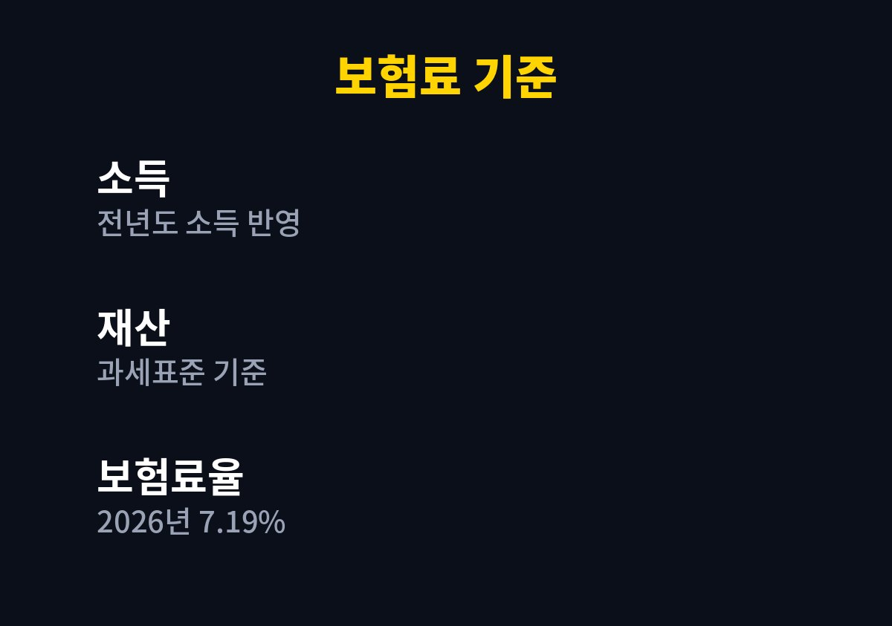
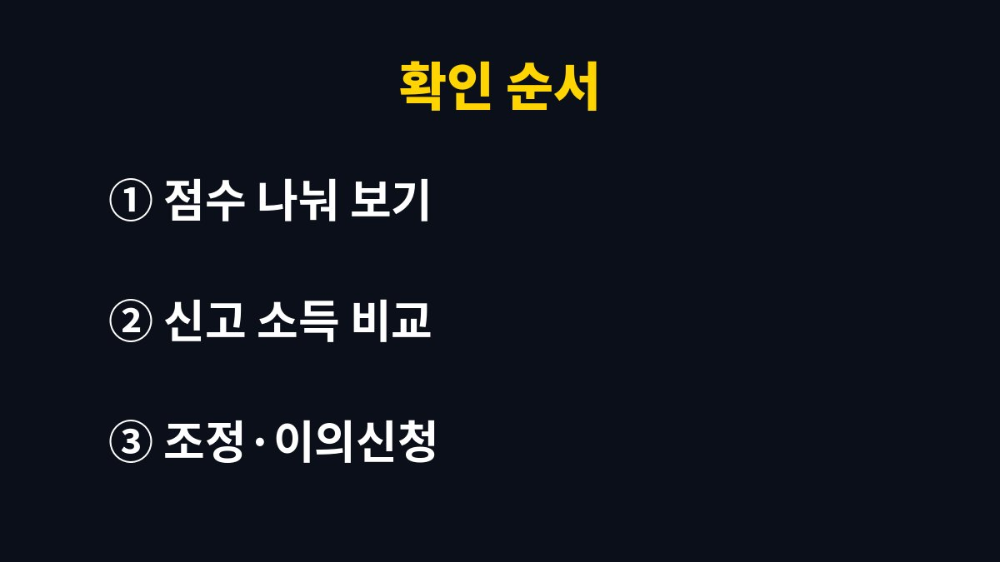

지역가입자 건강보험료는 소득과 재산을 기준으로 계산되므로, 고지서가 갑자기 올랐다면 소득 반영 시점부터 확인해야 합니다.
2026년 기준 건강보험료율은 7.19%이고, 지역가입자는 소득과 재산 점수를 합쳐 보험료를 냅니다.
고지서를 받고 막막했던 분들이 어디부터 보면 되는지 순서를 정리했습니다.
보험료를 낮추는 요령보다 왜 이 금액이 나왔는지 이해하는 것이 먼저입니다.
고지서 금액만 보고 판단하면 소득 문제인지 재산 문제인지 구분되지 않아 엉뚱한 곳을 손보게 됩니다.
원인을 알아야 이의신청이 필요한지 아니면 그대로 납부하면 되는지 판단할 수 있습니다.
보험료는 매출이 아니라 종합소득 신고서에 나온 소득금액을 기준으로 합니다.
매출이 컸어도 경비가 많아 소득이 낮게 신고됐다면 그만큼 보험료도 낮게 반영됩니다.
소득 자료는 보통 전년도 귀속분을 쓰고, 매년 11월에 새 소득이 반영됩니다.
지금 시기에 고지서 금액이 달라졌다면 이 갱신이 원인일 가능성이 큽니다.
올해 장사가 어려웠어도 이번에 반영되는 것은 작년 소득입니다.
예를 들어 지난봄 종합소득세를 신고한 금액이 11월 고지서부터 보험료에 새로 적용되는 식입니다.
재산은 재산세 과세표준을 기준으로 점수를 매기고, 기본 공제가 적용됩니다.
재산 자료는 매년 6월에 바뀌므로 소득 갱신과 시기가 다릅니다.
어느 쪽이 올랐는지 나눠 보면 원인이 바로 보입니다.
전월세로 사는 경우에도 보증금이 재산 점수에 반영될 수 있으니, 본인 항목에 어떤 재산이 잡혀 있는지 확인해야 합니다.
고지서와 공단 조회 화면에는 소득과 재산이 각각 어떻게 반영됐는지 항목이 나뉘어 있습니다.
아래 표는 항목별로 무엇을 확인하는지 정리한 것입니다.
| 항목 | 확인할 내용 | 갱신 시기 |
|---|---|---|
| 소득 | 종합소득 신고서의 소득금액과 일치하는지 | 매년 11월 |
| 재산 | 재산세 과세표준과 공제 반영 여부 | 매년 6월 |
| 보험료율 | 2026년 기준 7.19% | 연 단위 결정 |
| 가입 자격 | 지역가입자인지 임의계속가입자인지 | 자격 변동 때 |


폐업을 했는데도 이전 소득이 계속 반영되면 보험료가 부담으로 남습니다.
이럴 때는 폐업 사실이 확인되는 서류를 준비해 공단에 조정 가능 여부를 묻는 것이 첫 순서입니다.
다만 조정 기준은 상황마다 다르므로 공단 안내를 직접 확인해야 합니다.
직장에 취업해 직장가입자로 바뀌었다면 지역가입자 자격이 상실되었는지, 이중 고지가 없는지도 함께 살펴야 합니다.
고지서 하단의 납부 기한과 자동이체 계좌도 이번 기회에 확인해 두면 연체 가산금을 피할 수 있습니다.
소득 신고를 낮게 하면 보험료도 낮아지는 구조입니다.
그렇다고 소득을 줄여 신고하는 방식은 세무상 문제가 될 수 있습니다.
실제 소득을 정확히 신고하는 것을 기준으로 삼는 편이 안전합니다.
경비로 인정받을 수 있는 지출은 증빙을 갖춰 정당하게 반영하는 것이 합리적인 방법입니다.
이번 달 고지서를 받았다면 소득 점수가 지난달과 달라졌는지부터 확인합니다.
이유를 모르겠다면 국민건강보험공단 고객센터에서 반영된 소득 자료를 직접 확인해 보는 편이 가장 빠릅니다.
참고 자료: 국민건강보험공단 「지역가입자 보험료 부과 안내」(2026년 11월 확인)
※ 본 글은 2026년 기준 공개 자료를 바탕으로 정리한 정보이며, 세금·금융 상품 선택은 본인 상황에 맞게 전문가와 확인하시길 바랍니다.